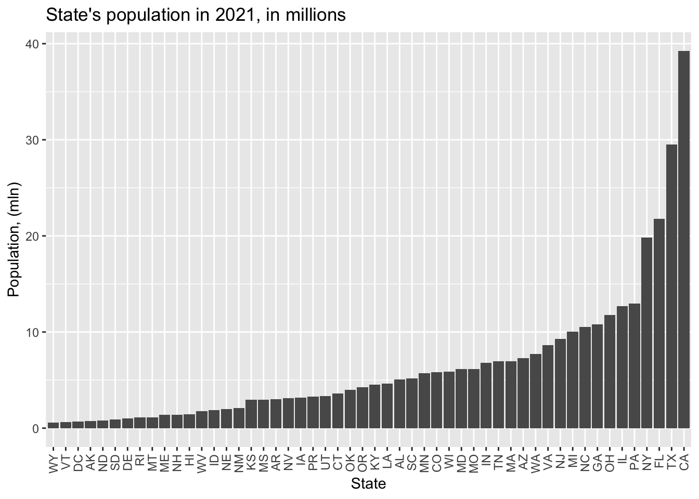
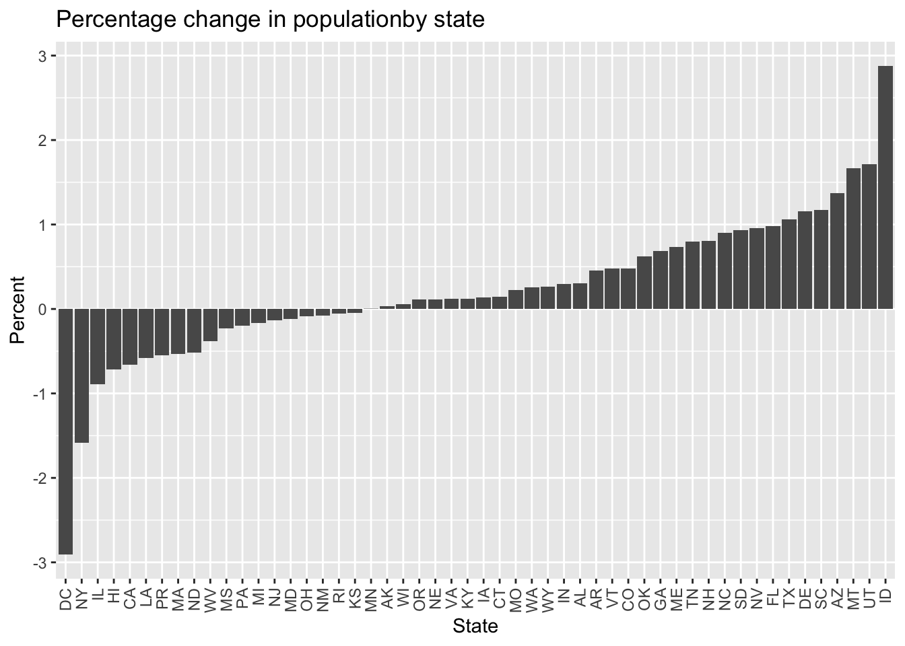

source("census_key.R")PS3
PS3
We plan to explore the relationship between COVID-19 death rates and vaccination rates across US states by visually examining their correlation. This analysis will involve gathering COVID-19 related data from the CDC’s API and then extensively processing it to merge the various datasets. Since the population sizes of states vary significantly, we will focus on comparing rates rather than absolute numbers. To facilitate this, we will also source population data from the US Census to accurately calculate these rates.
- Get an API key from the US Census at https://api.census.gov/data/key_signup.html. Save it an object called census_key.
- Use an internet search to find information about the US Census APIs to obtain vintage population estimates. Define a variable called api with the URL.
api <- "https://api.census.gov/data/2021/pep/population"- Read the documentation for the API and use the httr2 package to prepare a request that gives us 2020 and 2021 population estimates for each state. Save the request in a variable called request, without performing it. Compare the request to the examples in the documentation to see if you are on the right track.
#install.packages("httr2")
library(httr2)
# build the request
request <- request(api) |>
req_url_query(get = I("POP_2020,POP_2021,NAME"),
`for` = I("state:*"),
key = census_key)
request<httr2_request>GET
https://api.census.gov/data/2021/pep/population?get=POP_2020,POP_2021,NAME&for=state:*&key=ec6ebea847c417c9370dfaa4110cdc1ec44ecf1eBody: empty- Now perform the request and examine the data that is returned. Save the result to request (overwrite it).
request <- request |> req_perform()
request<httr2_response>GET
https://api.census.gov/data/2021/pep/population?get=POP_2020,POP_2021,NAME&for=state:*&key=ec6ebea847c417c9370dfaa4110cdc1ec44ecf1eStatus: 200 OKContent-Type: application/jsonBody: In memory (2112 bytes)- We see the request returned data in JSON format. We can see the content with the function req_body_json, but we want a data frame. Use the jsonlite package to convert the raw JSON data into a data frame. Save it in population.
library(jsonlite)population <- request |> resp_body_string() |> fromJSON(flatten = TRUE)
population [,1] [,2] [,3] [,4]
[1,] "POP_2020" "POP_2021" "NAME" "state"
[2,] "3962031" "3986639" "Oklahoma" "40"
[3,] "1961455" "1963692" "Nebraska" "31"
[4,] "1451911" "1441553" "Hawaii" "15"
[5,] "887099" "895376" "South Dakota" "46"
[6,] "6920119" "6975218" "Tennessee" "47"
[7,] "3114071" "3143991" "Nevada" "32"
[8,] "2117566" "2115877" "New Mexico" "35"
[9,] "3188669" "3193079" "Iowa" "19"
[10,] "2935880" "2934582" "Kansas" "20"
[11,] "690093" "670050" "District of Columbia" "11"
[12,] "29217653" "29527941" "Texas" "48"
[13,] "6154481" "6168187" "Missouri" "29"
[14,] "3012232" "3025891" "Arkansas" "05"
[15,] "10067664" "10050811" "Michigan" "26"
[16,] "1377848" "1388992" "New Hampshire" "33"
[17,] "10457177" "10551162" "North Carolina" "37"
[18,] "11790587" "11780017" "Ohio" "39"
[19,] "5130729" "5190705" "South Carolina" "45"
[20,] "577267" "578803" "Wyoming" "56"
[21,] "39499738" "39237836" "California" "06"
[22,] "778962" "774948" "North Dakota" "38"
[23,] "4651203" "4624047" "Louisiana" "22"
[24,] "6172679" "6165129" "Maryland" "24"
[25,] "991886" "1003384" "Delaware" "10"
[26,] "12989625" "12964056" "Pennsylvania" "42"
[27,] "10725800" "10799566" "Georgia" "13"
[28,] "4241544" "4246155" "Oregon" "41"
[29,] "5707165" "5707390" "Minnesota" "27"
[30,] "5784308" "5812069" "Colorado" "08"
[31,] "9279743" "9267130" "New Jersey" "34"
[32,] "4503958" "4509394" "Kentucky" "21"
[33,] "7718785" "7738692" "Washington" "53"
[34,] "1362280" "1372247" "Maine" "23"
[35,] "642495" "645570" "Vermont" "50"
[36,] "1847772" "1900923" "Idaho" "16"
[37,] "6785644" "6805985" "Indiana" "18"
[38,] "1086193" "1104271" "Montana" "30"
[39,] "20154933" "19835913" "New York" "36"
[40,] "3281538" "3263584" "Puerto Rico" "72"
[41,] "3600260" "3605597" "Connecticut" "09"
[42,] "21569932" "21781128" "Florida" "12"
[43,] "8632044" "8642274" "Virginia" "51"
[44,] "7022220" "6984723" "Massachusetts" "25"
[45,] "12785245" "12671469" "Illinois" "17"
[46,] "2956870" "2949965" "Mississippi" "28"
[47,] "7177986" "7276316" "Arizona" "04"
[48,] "3281684" "3337975" "Utah" "49"
[49,] "5892323" "5895908" "Wisconsin" "55"
[50,] "5024803" "5039877" "Alabama" "01"
[51,] "1789798" "1782959" "West Virginia" "54"
[52,] "1096229" "1095610" "Rhode Island" "44"
[53,] "732441" "732673" "Alaska" "02" # However, the problem is that it is not a dataframe - it's a matrix.
class(population)[1] "matrix" "array" - Examine the table. Notice 1) it is not tidy, 2) the column types are not what we want, and 3) the first row is a header. Convert population to a tidy dataset. Remove the state ID column and change the name of the column with state names to state_name. Add a column with state abbreviations called state. Make sure you assign the abbreviations for DC and PR correctly. Hint: Start by using the janitor package to make the first row the header.
library(tidyverse)── Attaching core tidyverse packages ──────────────────────── tidyverse 2.0.0 ──
✔ dplyr 1.1.4 ✔ readr 2.1.5
✔ forcats 1.0.0 ✔ stringr 1.5.1
✔ ggplot2 3.4.4 ✔ tibble 3.2.1
✔ lubridate 1.9.3 ✔ tidyr 1.3.1
✔ purrr 1.0.2
── Conflicts ────────────────────────────────────────── tidyverse_conflicts() ──
✖ dplyr::filter() masks stats::filter()
✖ purrr::flatten() masks jsonlite::flatten()
✖ dplyr::lag() masks stats::lag()
ℹ Use the conflicted package (<http://conflicted.r-lib.org/>) to force all conflicts to become errorslibrary(janitor)
Attaching package: 'janitor'
The following objects are masked from 'package:stats':
chisq.test, fisher.testpopulation <- population |> row_to_names(1) |>
as_tibble() |>
select(-state) |>
rename(state_name = NAME) |>
pivot_longer(-state_name, names_to = "year", values_to = "population") |>
mutate(year = str_remove(year, "POP_")) |>
mutate(across(-state_name, as.numeric)) |>
mutate(state = state.abb[match(state_name, state.name)]) |># R has abbrevs, no DC or PR though
mutate(state = case_when(
state_name == "District of Columbia" ~ "DC",
state_name == "Puerto Rico" ~ "PR",
.default = state # otherwise case
))
population# A tibble: 104 × 4
state_name year population state
<chr> <dbl> <dbl> <chr>
1 Oklahoma 2020 3962031 OK
2 Oklahoma 2021 3986639 OK
3 Nebraska 2020 1961455 NE
4 Nebraska 2021 1963692 NE
5 Hawaii 2020 1451911 HI
6 Hawaii 2021 1441553 HI
7 South Dakota 2020 887099 SD
8 South Dakota 2021 895376 SD
9 Tennessee 2020 6920119 TN
10 Tennessee 2021 6975218 TN
# ℹ 94 more rows- As a check, make a barplot of states’ 2021 populations
population |>
filter(year == 2021) |>
mutate(state = reorder(state, population), population=population/10^6) |>
ggplot(aes(state, population)) +
geom_col() +
theme(axis.text.x = element_text(angle = 90, vjust = 0.5, hjust=1)) +
labs(title = "State's population in 2021, in millions", x = "State", y = "Population, (mln)")
- To practice pivot_wider make a bar plot of percent change in population by state.
# pivot_wider() is an inverse of pivot_longer()
wider <-population |>
pivot_wider(names_from = year, values_from = population)
head(wider)# A tibble: 6 × 4
state_name state `2020` `2021`
<chr> <chr> <dbl> <dbl>
1 Oklahoma OK 3962031 3986639
2 Nebraska NE 1961455 1963692
3 Hawaii HI 1451911 1441553
4 South Dakota SD 887099 895376
5 Tennessee TN 6920119 6975218
6 Nevada NV 3114071 3143991For each state, I assume that the 2020 population is 100%, and calculate what percent is 2021 population value relative to 2020. Then I subtract the 2020 percentage from 2021 percentage. If the result is positive 3% - means that the population grew 3%, if it is negative 3% - means that the population reduced 3%.
# plot a bar plot of percent change in population by state
wider |>
rename(year_2020 = "2020") |>
rename(year_2021 = "2021") |>
mutate(perc_change = ((year_2021 - year_2020) / year_2020 * 100)) |>
mutate(state = reorder(state, perc_change)) |>
ggplot(aes(state, perc_change)) +
geom_col() +
theme(axis.text.x = element_text(angle = 90, vjust = 0.5, hjust=1)) +
labs(title = "Percentage change in populationby state", x = "State", y = "Percent")
- Add the following region numbers to the data:
cdc_regions_list <- list(
"1" = c("Connecticut", "Maine", "Massachusetts", "New Hampshire", "Rhode Island", "Vermont"),
"2" = c("New Jersey", "New York", "Puerto Rico", "Virgin Islands"),
"3" = c("Delaware", "District of Columbia", "Maryland", "Pennsylvania", "Virginia", "West Virginia"),
"4" = c("Alabama", "Florida", "Georgia", "Kentucky", "Mississippi", "North Carolina", "South Carolina", "Tennessee"),
"5" = c("Illinois", "Indiana", "Michigan", "Minnesota", "Ohio", "Wisconsin"),
"6" = c("Arkansas", "Louisiana", "New Mexico", "Oklahoma", "Texas"),
"7" = c("Iowa", "Kansas", "Missouri", "Nebraska"),
"8" = c("Colorado", "Montana", "North Dakota", "South Dakota", "Utah", "Wyoming"),
"9" = c("Arizona", "California", "Hawaii", "Nevada", "American Samoa", "Commonwealth of the Northern Mariana Islands", "Federated States of Micronesia", "Guam", "Marshall Islands", "Republic of Palau"),
"10" = c("Alaska", "Idaho", "Oregon", "Washington"))
cdc_regions <- do.call(rbind, lapply(names(cdc_regions_list), function(region) {
data.frame(region = region, state_name = cdc_regions_list[[region]])
})) |>
mutate(region = factor(as.numeric(region)))# joining population and cdc_regions tibbles
population <- left_join(population, cdc_regions, by = "state_name")
head(population)# A tibble: 6 × 5
state_name year population state region
<chr> <dbl> <dbl> <chr> <fct>
1 Oklahoma 2020 3962031 OK 6
2 Oklahoma 2021 3986639 OK 6
3 Nebraska 2020 1961455 NE 7
4 Nebraska 2021 1963692 NE 7
5 Hawaii 2020 1451911 HI 9
6 Hawaii 2021 1441553 HI 9 - Go to https://data.cdc.gov/ and learn about the CDC API for COVID-19 data. Find an API that provides state level data from SARS-COV2 cases and store it in a data frame.
api <- "https://data.cdc.gov/resource/pwn4-m3yp.json"
cases_raw <- request(api) |>
req_url_query("$limit" = 10000000) |>
req_perform() |> resp_body_string() |>
fromJSON(flatten = TRUE)
head(cases_raw) date_updated state start_date end_date
1 2023-02-23T00:00:00.000 AZ 2023-02-16T00:00:00.000 2023-02-22T00:00:00.000
2 2022-12-22T00:00:00.000 LA 2022-12-15T00:00:00.000 2022-12-21T00:00:00.000
3 2023-02-23T00:00:00.000 GA 2023-02-16T00:00:00.000 2023-02-22T00:00:00.000
4 2023-03-30T00:00:00.000 LA 2023-03-23T00:00:00.000 2023-03-29T00:00:00.000
5 2023-02-02T00:00:00.000 LA 2023-01-26T00:00:00.000 2023-02-01T00:00:00.000
6 2023-03-23T00:00:00.000 LA 2023-03-16T00:00:00.000 2023-03-22T00:00:00.000
tot_cases new_cases tot_deaths new_deaths new_historic_cases
1 2434631.0 3716.0 33042.0 39.0 23150
2 1507707.0 4041.0 18345.0 21.0 21397
3 3061141.0 5298.0 42324.0 88.0 6800
4 1588259.0 2203.0 18858.0 23.0 5347
5 1548508.0 5725.0 18572.0 47.0 4507
6 1580709.0 1961.0 18835.0 35.0 2239
new_historic_deaths
1 0
2 0
3 0
4 0
5 0
6 0- Note that we obtained weekly data. Wrangle the table so that keep only states for which you have population data. Keep the following variables: state, epidemiological week and year, and new cases (as numbers). Order by state, then chronologically. Hint: Use as_date, epiweek and epiyear functions in lubridate package.
library(lubridate)- Now repeat the same exercise for hospitalizations. However, before you start, notice the code for extracting the data is the same as in the previous exercise except for the API URL. Write a function that takes an API URL and returns the data in a data frame.
#get_cdc_data <- function(api){
#}
api <- "https://data.cdc.gov/resource/39z2-9zu6.json"
hosp_raw <- request(api) |>
req_url_query("$limit" = 10000000) |>
req_perform() |> resp_body_string() |>
fromJSON(flatten = TRUE)
head(hosp_raw) collection_date jurisdiction new_covid_19_hospital
1 2020-12-19T00:00:00.000 Region 6 2232
2 2020-12-20T00:00:00.000 Region 6 2074
3 2020-12-21T00:00:00.000 Region 6 2085
4 2020-12-22T00:00:00.000 Region 6 2443
5 2020-12-23T00:00:00.000 Region 6 2397
6 2020-12-24T00:00:00.000 Region 6 2412
new_covid_19_hospital_1 cumulative_covid_19_hospital
1 2042.0 164043
2 2083.5714285714284 166117
3 2126.0 168202
4 2170.5714285714284 170645
5 2217.1428571428573 173042
6 2261.714285714286 175454
cumulative_covid_19_hospital_1 new_covid_19_hospital_2
1 384.02923625440314 33.462652493678114
2 388.8845280741799 34.143891606289024
3 393.7655712006188 34.83917688617026
4 399.48470230752076 35.56957758422732
5 405.0961461320168 36.332752672581805
6 410.7427053746887 37.06315337063886
new_covid_19_hospital_3 new_covid_19_hospital_4 total_hospitalized_covid
1 33.462652493678114 33.462652493678114 14446
2 34.143891606289024 34.143891606289024 14682
3 34.83917688617026 34.83917688617026 15050
4 35.56957758422732 35.56957758422732 15343
5 36.332752672581805 36.332752672581805 15573
6 37.06315337063886 37.06315337063886 15578
total_hospitalized_covid_1 covid_19_inpatient_bed covid_19_inpatient_bed_1
1 14.409662891665608 14.409662891665608 0.6067330980167487
2 14.524712350172123 14.524712350172123 0.617919267041577
3 14.639707392769756 14.639707392769756 0.6344379424832596
4 14.809387417022192 14.809387417022192 0.7288504496213726
5 15.00406139048143 15.00406139048143 0.8487054580850426
6 15.29431187268649 15.29431187268649 1.0551255661651417
covid_19_icu_bed_occupancy covid_19_icu_bed_occupancy_1
1 14.409662891665608 0.645540771698716
2 14.524712350172123 0.5305077672539866
3 14.639707392769756 0.46674511764471305
4 14.809387417022192 0.43507717943583657
5 15.00406139048143 0.4373639554306905
6 15.29431187268649 0.44325289678921465- Now use the function to get the raw hospital data. Examine the data once you have it to determine if its daily or weekly.
#hosp_raw <- get_cdc_data()- Collapse the data into weekly data and keep the same columns as in the cases dataset, except keep total weekly hospitalizations instead of cases. Remove weeks with less than 7 days reporting.
#hosp <- hosp_raw |>- Repeat what you did in the previous two exercises for provisional COVID-19 deaths.
#deaths_raw <- get_cdc_data()
api <- "https://data.cdc.gov/resource/r8kw-7aab.json"
deaths_raw <- request(api) |>
req_url_query("$limit" = 10000000) |>
req_perform() |> resp_body_string() |>
fromJSON(flatten = TRUE)
head(deaths_raw) data_as_of start_date end_date
1 2024-02-08T00:00:00.000 2019-12-29T00:00:00.000 2020-01-04T00:00:00.000
2 2024-02-08T00:00:00.000 2020-01-05T00:00:00.000 2020-01-11T00:00:00.000
3 2024-02-08T00:00:00.000 2020-01-12T00:00:00.000 2020-01-18T00:00:00.000
4 2024-02-08T00:00:00.000 2020-01-19T00:00:00.000 2020-01-25T00:00:00.000
5 2024-02-08T00:00:00.000 2020-01-26T00:00:00.000 2020-02-01T00:00:00.000
6 2024-02-08T00:00:00.000 2020-02-02T00:00:00.000 2020-02-08T00:00:00.000
group year mmwr_week week_ending_date state
1 By Week 2019/2020 1 2020-01-04T00:00:00.000 United States
2 By Week 2020 2 2020-01-11T00:00:00.000 United States
3 By Week 2020 3 2020-01-18T00:00:00.000 United States
4 By Week 2020 4 2020-01-25T00:00:00.000 United States
5 By Week 2020 5 2020-02-01T00:00:00.000 United States
6 By Week 2020 6 2020-02-08T00:00:00.000 United States
covid_19_deaths total_deaths percent_of_expected_deaths pneumonia_deaths
1 0 60170 98.00 4111
2 1 60734 97.00 4153
3 2 59362 98.00 4066
4 3 59162 99.00 3915
5 0 58834 99.00 3818
6 4 59482 100 3823
pneumonia_and_covid_19_deaths influenza_deaths
1 0 434
2 1 475
3 2 468
4 0 500
5 0 481
6 1 520
pneumonia_influenza_or_covid_19_deaths footnote month
1 4545 <NA> <NA>
2 4628 <NA> <NA>
3 4534 <NA> <NA>
4 4418 <NA> <NA>
5 4299 <NA> <NA>
6 4346 <NA> <NA>#deaths <- deaths_raw |>- Obtain vaccination data. Keep the variables series_complete and booster along with state and date. Remember we will later want to join with the others.
#vax_raw <- get_cdc_data()
api <- "https://data.cdc.gov/resource/rh2h-3yt2.json"
vax_raw <- request(api) |>
req_url_query("$limit" = 10000000) |>
req_perform() |> resp_body_string() |>
fromJSON(flatten = TRUE)
head(vax_raw) date date_type mmwr_week location administered_daily
1 2023-05-10T00:00:00.000 Report 19 CO 15097
2 2023-05-10T00:00:00.000 Report 19 AZ 16505
3 2023-05-10T00:00:00.000 Report 19 MN 16020
4 2023-05-10T00:00:00.000 Report 19 ID 3526
5 2023-05-10T00:00:00.000 Report 19 DC 31
6 2023-05-10T00:00:00.000 Report 19 AK 1582
administered_cumulative admin_dose_1_daily admin_dose_1_cumulative
1 13033446 1527 4837792
2 14647405 2955 5704677
3 12829141 1282 4461994
4 2894361 323 1146055
5 2137377 264 836680
6 1328221 130 535718
administered_dose1_pop_pct series_complete_daily series_complete_cumulative
1 84.0 1218 4248431
2 78.4 1101 4821350
3 79.1 932 4082263
4 64.1 267 1012257
5 95.0 212 644085
6 73.2 86 477592
series_complete_pop_pct booster_daily booster_cumulative
1 73.8 1569 2460212
2 66.2 1401 2418342
3 72.4 1698 2595884
4 56.6 333 494214
5 91.3 196 330888
6 65.3 158 237614
additional_doses_vax_pct second_booster_50plus_daily
1 57.9 1062
2 50.2 1312
3 63.6 1196
4 48.8 281
5 51.4 106
6 49.8 164
second_booster_50plus_cumulative second_booster_50plus_vax_pct
1 794838 62.9
2 794699 54.3
3 983284 67.8
4 173862 54.8
5 80880 55.9
6 69502 54.7
bivalent_booster_daily bivalent_booster_cumulative bivalent_booster_pop_pct
1 9725 1272115 22.1
2 11388 1148060 15.8
3 5497 1510743 26.8
4 2032 248989 13.9
5 509 226857 32.1
6 640 103624 14.2
administered_7_day_rolling admin_dose_1_day_rolling
1 <NA> <NA>
2 <NA> <NA>
3 <NA> <NA>
4 <NA> <NA>
5 <NA> <NA>
6 <NA> <NA>
series_complete_day_rolling booster_7_day_rolling_average
1 <NA> <NA>
2 <NA> <NA>
3 <NA> <NA>
4 <NA> <NA>
5 <NA> <NA>
6 <NA> <NA>
second_booster_50plus_7_day_rolling_average
1 <NA>
2 <NA>
3 <NA>
4 <NA>
5 <NA>
6 <NA>
bivalent_booster_7_day_rolling_average administered_daily_change
1 <NA> <NA>
2 <NA> <NA>
3 <NA> <NA>
4 <NA> <NA>
5 <NA> <NA>
6 <NA> <NA>
administered_daily_change_1
1 <NA>
2 <NA>
3 <NA>
4 <NA>
5 <NA>
6 <NA>#vax <- vax_raw |> - Now we are ready to join the tables. We will only consider 2020 and 2021 as we don’t have population sizes for 2020. However, because we want to guarantee that all dates are included we will create a data frame with all possible weeks. We can use this:
all_dates <- data.frame(date = seq(make_date(2020, 1, 25), make_date(2021, 12, 31), by = "week")) |>
mutate(date = ceiling_date(date, unit = "week", week_start = 7) - days(1)) |>
mutate(mmwr_year = epiyear(date), mmwr_week = epiweek(date))
dates_and_pop <- cross_join(population, all_dates)Use this to join all the tables in a way that preserves these dates. Call the final table dat.
#dat <- - Plot a trend plot with cases per person for all states with color representing region.
#dat |> ggplot()- Repeat the above for hospitalizations and deaths. Use
pivot_longerandfacet_wrap. Plot rates per \(100,000\) people. Place the plots on top of each other.
#dat |> - For the period January 1 to July 1, 2021 compute the deaths per day per 100,000 people in each state as well as the vaccination rate (primary series) by September 1st. Plot these against each other.
#dat |> - Repeat the exercise for the booster for October 1 to December 31, 2021.
#dat |>